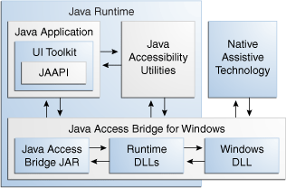

Java Accessibility Guide > Java Access Bridge Programmer's Guide for Assistive Technology Developers > Introduction to Java Access Bridge
The following topics are covered:
Java Access Bridge is a technology that exposes the Java Accessibility API in a Microsoft Windows DLL, enabling Java applications and applets that implement the Java Accessibility API to be visible to assistive technologies on Microsoft Windows systems. Java Accessibility API is part of Java Accessibility Utilities, which is a set of utility classes that help assistive technologies provide access to GUI toolkits that implement the Java Accessibility API.
In order for existing assistive technologies available on Microsoft Windows systems to provide access to Java applications, they need some way to communicate with Java Accessibility Utilities. Java Access Bridge supports this communication.
An assistive technology application running on Microsoft Windows (for example a screen reader) communicates with Java Access Bridge DLLs, which in turn communicates with the Java Virtual Machine through Java Access Bridge Java libraries. These Java libraries communicate with Java Accessibility Utilities. Java Accessibility Utilities collects information about what is happening in the Java application, which it forwards to the screen reader through Java Access Bridge.
The following figure shows how Java Access Bridge and Java Accessibility Utilities components interact with each other:
Description of Java Access Bridge Architecture Diagram
Java Access Bridge provides a subset of the Java Accessibility API as a Windows DLL, WindowsAccessBridge.dll. Assistive technologies on Microsoft Windows load and link to this DLL. Java Access Bridge also provides a pair of DLLs, JavaAccessBridge.dll and JAWTAccessBridge.dll, that are loaded by the Java runtime. This pair of DLLs communicate with the application through the Java Accessibility API and through it, the user interface toolkit and components. The pair of DLLs also communicate with the application through Java Accessibility Utilities, a collection of classes that coalesce events and provide application life-cycle functionality to assistive technologies (and to Java Access Bridge, which acts as an assistive technology). The Java component to Java Access Bridge, a set of classes packaged into a JAR file, access-bridge.jar, manages communication between the DLLs loaded into the Java runtime and the other Java code in the Java runtime. This JAR file is loaded into the Java SE runtime through the accessibility.properties file and in turn loads the Java-side DLLs through Java Native Interfaces (JNI).
The communication that Java Access Bridge enables between assistive technologies and Java applications through Java Accessibility Utilities is called inter-process communication. Java Access Bridge 2.0.2 and later provides 64-bit inter-process communication. This enables 64-bit and 32-bit assistive technologies to communicate with Java applications on a 64-bit Windows system. For more information about 64-bit support, see API Changes from 2.0.1 in Java Access Bridge API. Java Access Bridge 2.0.2 and later also provides 32-bit inter-process communication. This enables 32-bit assistive technologies to communicate with Java applications on a 32-bit Windows system.
For more information, visit the following: